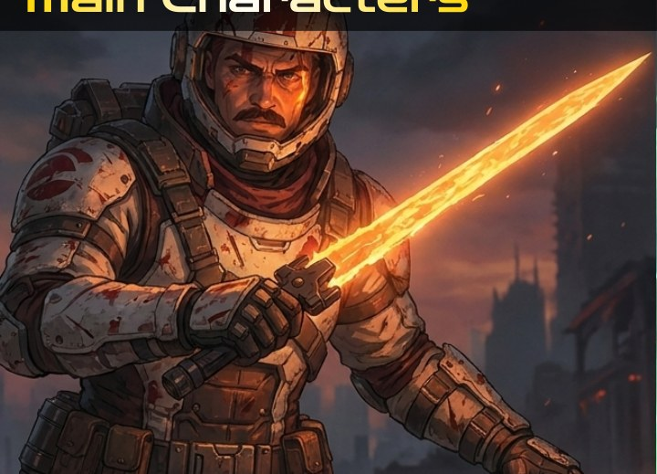
Masked protector
Liam Kennyson
A warrior driven by duty and love. Determined to keep his promise, he risks everything to secure Alice’s escape.
A warrior’s final mission is not to win the war—it is to give one child a chance at tomorrow.
In a dying world overrun by monsters, a battle-worn warrior must sacrifice his last chance at survival to send an infant to a new world and give the child one last hope.
As alien creatures consume the ruins of civilization, warrior Liam Kennyson fights his way toward the last evacuation station with Alice, an infant whose mysterious cyan-gold light turns the tide against a terrifying Void Stalker. Remembering Alice’s mother and the promise he made, Liam secures the child inside the final escape craft, the Cradle. As a horde floods the hangar, the craft launches toward a distant planet that may sustain life. Liam stays behind to hold the monsters back; his fate remains unknown, while Alice carries the world’s last fragile hope into space.
Selected keyframes from the short film, presented in widescreen 16:9 format.
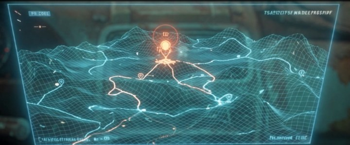
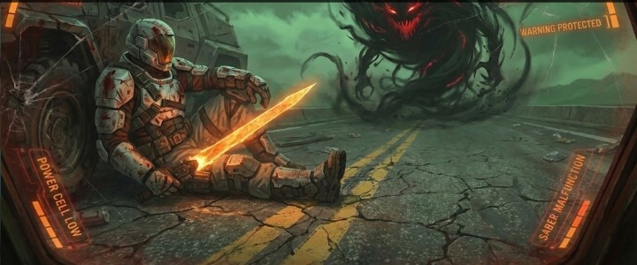
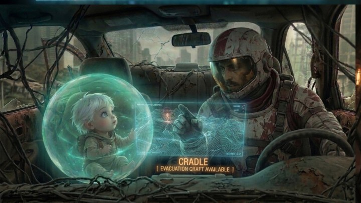
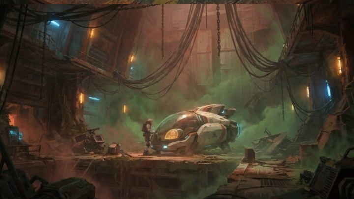

A warrior driven by duty and love. Determined to keep his promise, he risks everything to secure Alice’s escape.
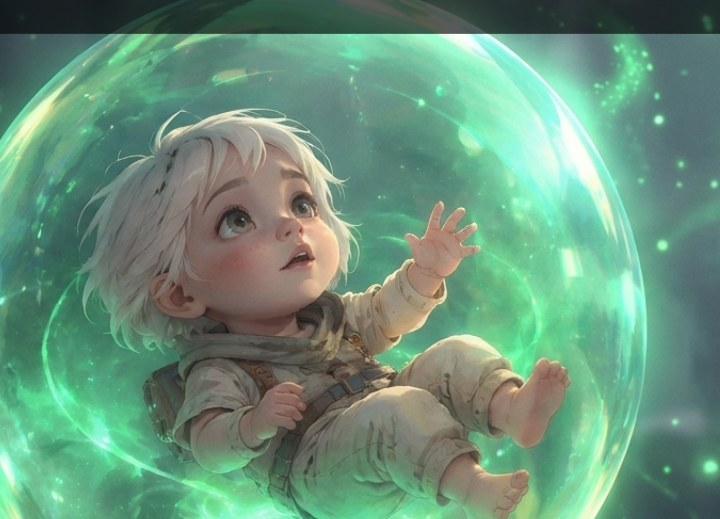
An infant carrying the possibility of a new beginning. Her mysterious cyan-gold glow becomes an unexpected turning point in Liam’s final fight.
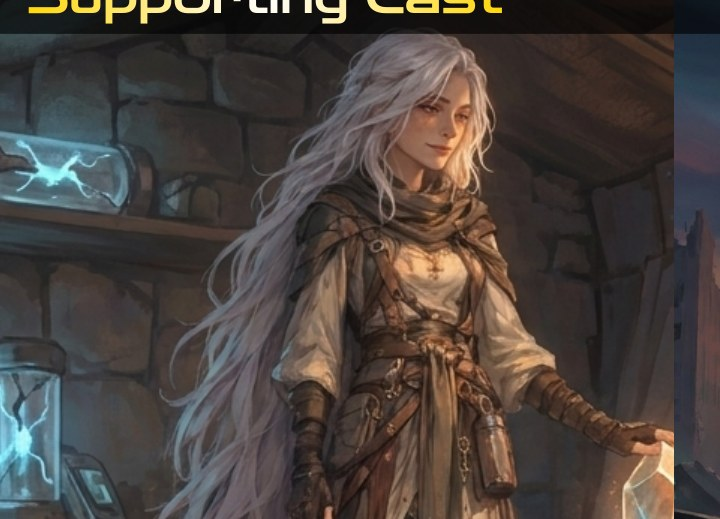
A loving mother who entrusts Alice to Liam, asking him to give her daughter a chance at life beyond their dying world.
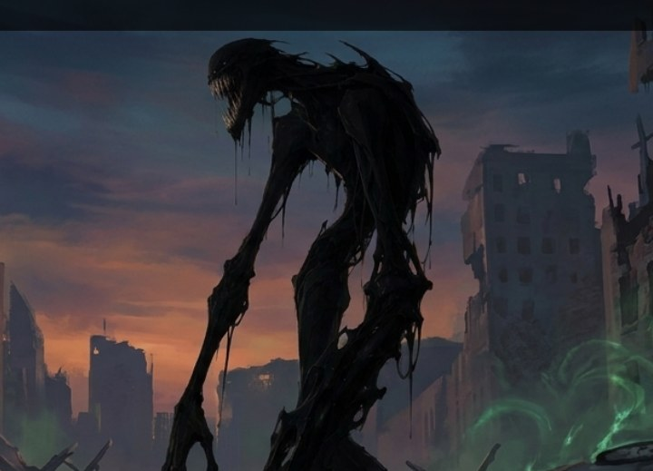
Terrifying creatures with elongated limbs and light-absorbing bodies, embodying the relentless threat consuming the last remnants of civilization.
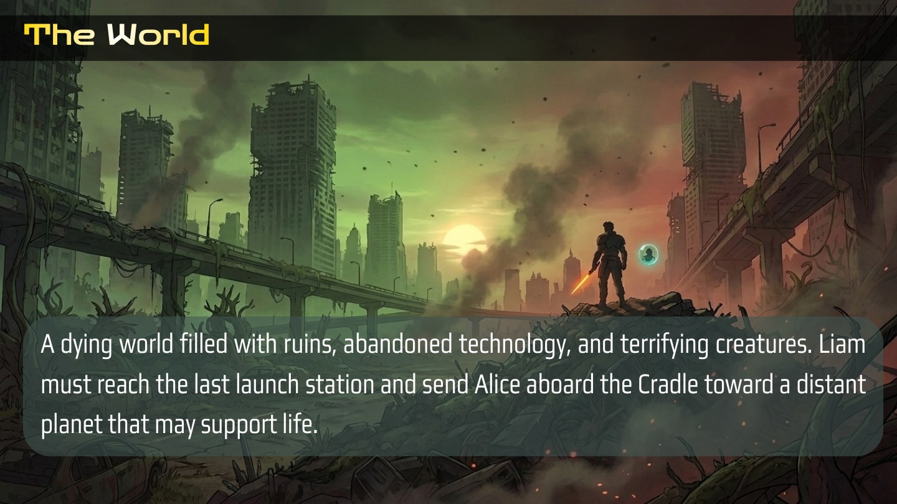
The world is a landscape of ruins, abandoned technology, and terrifying creatures. Liam must reach the final launch station and send Alice aboard the Cradle toward a distant planet that may support life.
A painterly 2D/3D hybrid aims to feel like fluid, moving concept art while reducing the clean, plastic look of traditional 3D animation. The short film cites the animated series Arcane as a visual inspiration.
Justice Feleo is the director and writer of The Last Cradle, shaping its creative vision, storytelling, and dialogue. Outside filmmaking, he enjoys gaming, video editing, and creative writing. His creative work draws inspiration from PRAGMATA and Arcane.
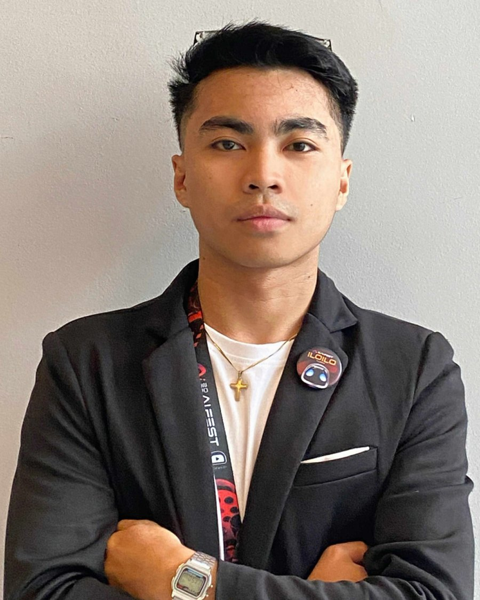
Christian D. Chavez is the AI Production Team Leader at Vidsnax Production in Iloilo, Philippines, bringing together AI filmmaking, multimedia editing, design, programming, and creative team leadership. He has participated in the Advanced AI Filmmaking Course by Curious Refuge, DOST-VI AI-Fest, SineAI, and CapCut Philippines Creative Partner activities. Outside production, he enjoys content creation, editorial cartooning, multimedia art, photography, and videography.
AI & generative tools: Seedance 2.0, Kling, Higgsfield, Veo 3, ElevenLabs, Suno.
Editing: Premiere Pro, Canva Pro, CapCut Pro.
Design & programming: Photoshop, Figma, HTML/CSS, JavaScript, C#, MySQL.
Leadership: Creative direction, team management, prompt engineering, and storyboarding.
Courses, events & activities: Advanced AI Filmmaking Course — Curious Refuge; DOST-VI AI-Fest; SineAI; CapCut Philippines Creative Partner.
Contact: chavezchristian816@gmail.com
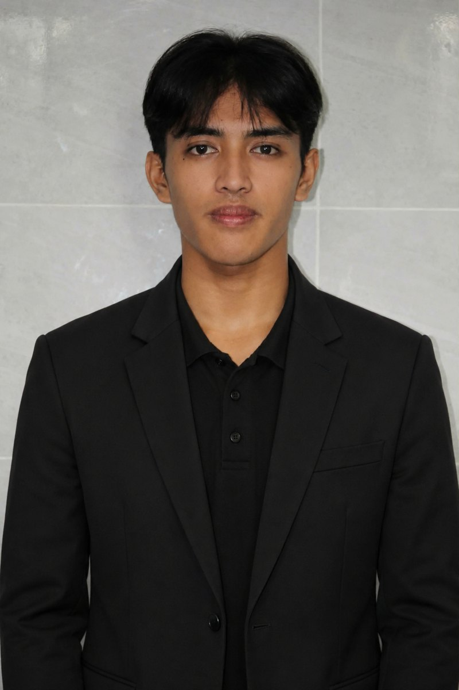
Rodolfo P. Sapin Jr. is an AI Production Editor and generative AI filmmaker at Vidsnax Production, with a background in Information Technology, digital art, journalism, and software development. He specializes in AI-assisted filmmaking, prompt engineering, cinematic storyboarding, multimedia editing, and maintaining visual consistency throughout production. Outside AI production, he draws on his experience in school journalism, editorial cartooning, layout design, photojournalism, traditional art, photography, and digital storytelling.
Tools: Seedance 2.0, Kling AI, Higgsfield AI, Google Veo 3, ElevenLabs, Suno AI, CapCut Pro, Photoshop, Canva Pro.
Development: HTML, CSS, JavaScript, C#, PHP, Flutter, Flask, MySQL, Supabase, Firebase, GitHub, Vercel, Antigravity.
Training & activities: Curious Refuge Advanced AI Filmmaking Course, DOST-VI AI-Fest / SineAI, CapCut Philippines Creative Partner, DICT training, journalism webinars, and RASUC painting competition.
Contact: rodolfosapin494@gmai.com
Additional individual artist and music credits can be added here if applicable.
The deck describes a four-stage workflow: pre-production (script, storyboards, character designs, visual planning, prompts); production (prompting, scene creation, animation, environments, cinematography); post-production (revisions, visual effects, compositing, editing, color grading); and finalization (sound design, music, audio mixing, delivery).
Tools identified by the team include Seedance 2.0, Kling, Higgsfield, Veo 3, ElevenLabs, Suno, Premiere Pro, Canva Pro, CapCut Pro, Photoshop, and Figma. Programming skills include HTML/CSS, JavaScript, C#, and MySQL.
Team leader / primary contact listed in the short film